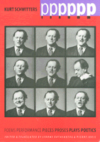

<body bgcolor="#FFFFFF" text="#000000" link="#0000FF" vlink="#CC0000" alink="#CC0000"><center><hr width="350" size="1" align="center" noshade>The first book of Kurt Schwitters' writings translated into English<hr width="350" size="1" align="center" noshade><p><a href="https://cdcshoppingcart.uchicago.edu/Cart/ChicagoBook.aspx?ISBN=9780877228943&&PRESS=temple" target="_top">Buy this book!</a> | <a href="https://cdcshoppingcart.uchicago.edu/Cart/Cart.aspx?PRESS=temple" target="_top">View Cart</a> | <a href="https://cdcshoppingcart.uchicago.edu/Cart/Cart.aspx?PRESS=temple" target="_top">Check Out</a></p><p></p></center><!--none//--><h1>Poems Performance Pieces Proses Plays Poetics</h1>
<h3>Kurt Schwitters, edited by Jerome Rothenberg, translated by Pierre Joris</h3>
<P>cloth 0-87722-894-9 $54.95, Apr 93, <FONT COLOR=#990033>Out of Print</FONT>
<br>paper 1-56639-264-0 $29.95, Sep 94, <FONT COLOR=#990033>Out of Print</FONT>
<BR> 288 pp
7x10
4&nbsp;color&nbsp;illustrations
</P><h3 align="center"><P><font color="#996633">Pen Center USA West Literary Award for Translation,
1994</font></P>
</H3>
<BLOCKQUOTE><I>"My aim is the total Merz art work, which combines all genres into an artistic unity. First I married off single genres. I pasted words and sentences together in poems in such a way that their rhythmic composition created a kind of drawing. The other way around, I pasted together pictures and drawings containing sentences that demand to be read.... I did this in order to erase the boundaries between the arts."</I>
<br>&#151<b>Kurt Schwitters</b><I></I></BLOCKQUOTE>
<p>Although Kurt Schwitters (1887-1948) is increasingly recognized as one of the great visual artists of the twentieth century&#151a recognition reconfirmed in 1985 by a highly acclaimed retrospective at New York's Museum of Modern Art&#151his achievements as one of the major poets and theorists of Modernism have not received the same degree of attention. This collection of Schwitters' literary work, presented by two American poets of international standing, brings the vast range and unique genius of his writings to English-language audiences for the first time.
<p>Coining the word "Merz" to identify his one-man version of Dadism, Schwitters sought to "erase the boundaries between the arts" and to emphasize the reciprocal relationship of his visual and verbal works. Schwitters worked with and developed more new forms and genres than almost any poet of his time. The wide sweep and inventiveness of his literary output&#151essays, plays, fiction, manifestos, as well as poetry&#151reflect or prefigure movements such as expressionism, surrealism, sound-texts, concrete poetry, performance art, and language poetry.
<p>To present Schwitters' astounding range, the poet-translators of this volume have selected poems, "proses," performance pieces, and manifestos; included complete major works, such as "Augusta Bolte" and "Ur Sonata"; offered selections from Schwitters' plays; and provided a sampler of the collaged and word-filled paintings (some in full color).
<BR>&nbsp;<h2>Reviews</h2>
<p><I>"Alone, the artist's work would remain equally strong and radical, but I think it is fortunate that his work fell into the hands of Joris and Rothenberg....The[y] provide a clear historical background while establishing the importance and current validity of Schwitters' written work."</I>
<br>&#151<b><I>American Book Review</I></b>
<p><I>"Jerome Rothenberg and Pierre Joris, themselves important poets, have given us a wonderfully supple idiomatic translation of Schwitters' major poems, fictions, and plays. Form the radical language experiments of the early twenties&#151'An Anna Blume' and the 'Ur Sonata' are cited in virtually every book-length study of Dada and European avant-garde&#151to the later plays and the </I>Merz<I> manifestos, Rothenberg and Joris have done wonders in conveying the tone and pace of Schwitters' poetic and performance pieces. Anyone who cares about the Modernist avant-garde will want to own this book, and its critical apparatus makes it ideal for classroom use."</I>
<br>&#151<b>Marjorie Perloff</b>
<BR>&nbsp;<h2>Contents</h2><P>
<p>Introduction
<p><b>Part I: Poems & Performance Pieces</b>
<br>1. The World
<br>2. Unstupid
<br>3. Nights
<br>4. "Thou"
<br>5. Legborders
<br>6. Green Child
<br>7. Wound roses roses bleed
<br>8. Light & Low
<br>9. Cnudgel
<br>10. Madd Madd World
<br>11. He She It
<br>12. Simultaneous Poem
<br>13. Repose
<br>14. An Anna Blume
<br>15. Anna Blossom Has Wheels
<br>16. Call It Killing You Off
<br>17. The Bahnhof
<br>18. Execution
<br>19. To Johannes Molzahn
<br>20. Herwarth Walden
<br>21. Portrait of Herwarth Walden
<br>22. Portrait of Nell Walden
<br>23. Portrait of Christof Spengemann
<br>24. Portrait of Rudolf Bliimner
<br>25. Portrait of Rudolf Bauer
<br>26. Mary the Red
<br>27. To Maria
<br>28. On a Drawing by Marc Chagall
<br>29. A Flower Like a Raven
<br>30. Private Gentlemen, Attention Please!
<br>31. Decay's Way
<br>32. Wheelers Dealers
<br>33. Evening
<br>34. Waggling
<br>35. From the Back & from the Front to Start
<br>36. Murder Machine 43
<br>37. Chinese Banalities
<br>38. The Prisoner
<br>39. Workers Song
<br>40. Subway Poem
<br>41. High Fashion Furs
<br>42. Raspberry Bonbons
<br>43. The Meadow
<br>44. The Critic
<br>45. For Franz Marc
<br>46. The Great Ardor of Dada
<br>47. Cigarren
<br>48. Simile
<br>50. Your Most Humble
<br>51. To the Berlin Proletariat!
<br>52. Desire
<br>53. Candle Fat
<br>54. Ice Clocks
<br>55. Village Poem
<br>56. Dumb Poem
<br>57. Wirecircus
<br>58. The Hand
<br>59. Analysis
<br>60. Roses abloom like daisy blossoms
<br>61. Autumn
<br>62. Twelve
<br>63. Poem 25
<br>64. Z A
<br>65. Register
<br>66. Typographic Visual Poem
<br>67. AO Visual Poem
<br>68. A-A Visual Poem
<br>69. S-S Visual Poem
<br>70. Ur Sonata
<br>71. Indecent i-Poem
<br>72. p p p p p p p p p
<br>73. Banalities (1) and (2)
<br>74. From <I>Hannover Merzbau</I>
<br>75. [1 7 10]
<br>76. Ideas for Poems
<br>77. Autumn / The Last Fly
<br>78. Four Bear Songs
<br>79. Tortrtalt
<br>80. Devil in Need
<br>81. For Anne: A Poem to Be Sung as a Round
<br>82. If I Were, When I Was
<br>83. Four Visual Poems:
<br>84. Mai 191, Oon, Difficult, Esir
<br>85. Premonitions
<br>86. When someone once said
<br>87. Small Chinese Poem
<br>88. Flight
<br>89. Perhaps Strange
<br>90. There was a little Kew
<br>91. Imagination
<br>92. Funeral Furnitures at your service
<br>93. She Dolls with Dollies
<br>94. K�nigsberger Is Like That
<br>95. Dadar
<br>96. I and You
<br>97. [Frohe Tage]
<br>98. And in the night
<br>99. She is my fairy queen
<br>100. Count Sardinowhocount
<br>101. [To avoid]
<br>102. London Onion
<br>103. Opinion
<br>104. One day
<br>105. Far away from
<br>106. At first men were limited
<br>107. The Prisoner
<br>108. A fishbone fish a fefishbone
<br>109. Pin
<br>110. Die Gazelle zittert / The gazelle trembles
<p><b>Part II: Proses & Plays</b>
<br>111. The Onion
<br>112. Kurt Schwitters to the Swiss Dadaist Arp. Blackberries (2)
<br>113. A Quarter of the Feelings of Old Man Automato in His Ancestral Castle Atho
<br>114. The Secret Drawer
<br>115. Vexation Plays
<br>116. Dramatic Sketch
<br>117. Buckets
<br>118. Augusta Bolte
<br>119. Shepherd's Play
<br>120. Shadow Play
<br>121. Profane Words over the Eternal City
<br>122. In the Middle of the World a House Stands
<br>123. Two Choruses from <I>Above and Below</I>
<br>124. The Family Plot
<br>125. For Exhibition
<p><b>Part III: Poetics</b>
<br>126. The Artists' Right to Self-Determination
<br>127. From <I>Merz</I>
<br>128. i
<br>129. Consistent Poetry
<br>130. What Is Madness?
<br>131. Language
<br>132. [What art is, you know... ]
<br>133. Grotesques and Satires
<br>134. Numbers
<br>135. typography and orthography: small letters
<br>136. My Sonata in Primal Sounds
<br>137. About me by myself
<br>138. Stone upon stone is a building
<br>139. Present Inter Noumenal
<br>140. PIN
<p>Chronology
<br>Index of Titles
<br>About the Translators
</P><BR>&nbsp;<H2>About the Author(s)</H2>
<table><tr><td valign="top"><img src="/tempress/authors/766_au2.gif" height="90" width="75"></td><td width="100%" valign="middle"><p><b>Jerome Rothenberg</b> is the author of more than fifty books of poetry and the editor of six groundbreaking anthologies of experimental and traditional poetry. He is currently Professor of Visual Arts and Literature at the University of California, San Diego.</P></td></tr></table><table><tr><td valign="top"><img src="/tempress/authors/766_au3.gif" height="90" width="75"></td><td width="100%" valign="middle"><p><b>Pierre Joris</b> has published twenty books of poetry, several anthologies, and many volumes of translations (into both English and French). He is Associate Professor of English at the State University of New York, Albany.</P></td></tr></table>
<BR><H2>Subject Categories</H2>
<p><A HREF="/tempress/general.html" TARGET="_top">General Interest</a>
<BR><A HREF="/tempress/literature.html" TARGET="_top">Literature and Drama</a>
<BR><A HREF="/tempress/race.html" TARGET="_top">Race and Ethnicity</a>
</p>
<BR><h2 class="inpageheading">In the series</H2>
<P><I><a href="http://www.temple.edu/tempress/border.html" onMouseOver="window.status='Click for other books in this series!'; return true;" onMouseOut="window.status=''; return true;" target="_top">Border Lines: Works in Translation</a></i>, edited by Lawrence Venuti.
</p><p><I>Border Lines</I>, edited by Lawrence Venuti, is a translation series designed to make important foreign literary works available to an English-language audience and to recognize and support the role of translation in promoting cultural diversity. The books will be primarily fiction and poetry, but the series will also consider drama and non-fiction genres like memoirs and criticism. Preference will be given to foreign writers who have never been translated into English, and to foreign literatures that are underrepresented in Anglo-American culture because of aesthetic, cultural, or political differences.</p>
<p align="center"><a href="https://cdcshoppingcart.uchicago.edu/Cart/ChicagoBook.aspx?ISBN=9780877228943&&PRESS=temple" target="_top">Buy this book!</a> | <a href="https://cdcshoppingcart.uchicago.edu/Cart/Cart.aspx?PRESS=temple" target="_top">View Cart</a> | <a href="https://cdcshoppingcart.uchicago.edu/Cart/Cart.aspx?PRESS=temple" target="_top">Check Out</a></p><p><font face="Arial" size="1"><a href="copyright.html" onMouseOver="window.status='Web Copyright Policy';return true;" onMouseOut="window.status=''" title="Web Copyright Policy">&copy;</a> 2015 <a href="http://www.temple.edu" target="new" onMouseOver="window.status='Link to Temple University home page';return true;" onMouseOut="window.status=''" title="Link to Temple University home page">Temple University</a>. All Rights Reserved. http://www.temple.edu/tempress/titles/766_reg.html</font></p>